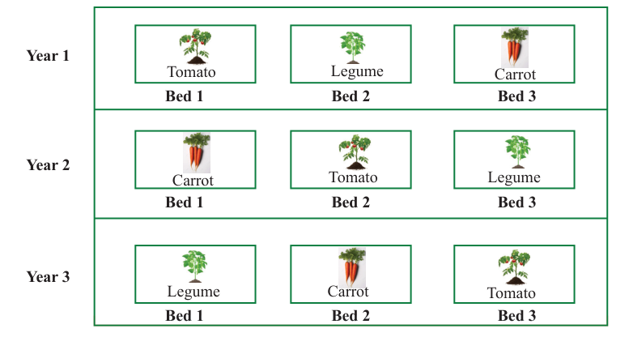
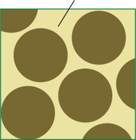
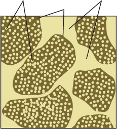

Soil pore spaces
Soil pore spaces, also known as soil porosity, are open spaces between and within soil aggregates. These spaces are usually filled with water and air. Everything in the soil that is not a solid is in these pore spaces. Based on size, there are two types of pores namely, macro pores and micro pores (Figure 2.9 (a) and (b)).


When the soil is porous, it can hold more water and nutrients. This is important for plant growth as it allows plants to absorb water and nutrients from the soil. Without sufficient porosity, water and nutrients cannot penetrate the soil, leading to poor plant growth and health. Moreover, soil porosity also plays a role in the airflow in the soil. This is important because it allows the movement of gases, which are essential for the life of plants and soil organisms. If soil is compacted or has low